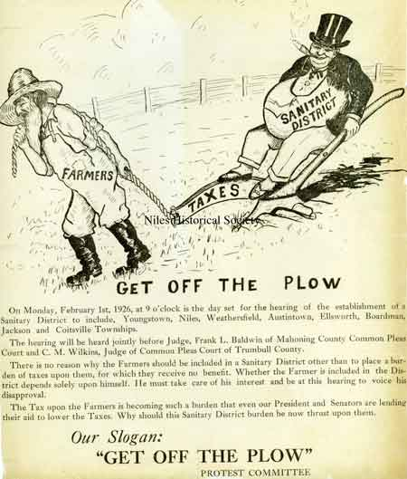

Ward-Thomas Museum


Bert Holloway
Ward — Thomas
Museum
Home of the Niles Historical Society
503 Brown Street Niles, Ohio 44446
Click here to become a Niles Historical Society Member or to renew your membership
Click on any photograph to view a larger image, click on image again to zoom into photograph.
|
PO1.984 |
Bert Holloway (1873-1959). Bert Holloway was born at Lisbon, Ohio July 1873. He obtained a grammar school education. While earning $60 a month as train engineer, who shoveled his own coal, he enrolled for a Mechanical Course at the age of 19 on December 1892. He then became superintendent for the City Light and Water Works of Niles for over 50 years. |
|
| |
||
PO1.1098 |
Bert Holloway enlisted as a machinist in the US Navy during the Spanish-American War. On April 16. 1917, the day the United States declared war on Germany, Bert enlisted in the Navy as an engineer attaining the rank of lieutenant. After the war in 1919 he transferred to U.S. Naval Reserve. He tried to enlist in WWII but was not accepted because of his age. He went to NYC and at the age of 70 enlisted in the merchant marines as a lieutenant. At the time of his enlistment, he was the oldest man to serve in the second World War It wasn’t a desk job either, he shipped on convoys to both England and Italy. On the convoy to Italy his ship carried TNT |
|
| |
||
Raising the Niles City Water and Electric plant in 1905.. PO1.387 |
As superintendent of Niles Water & Light Dept. from 1903 - 1953, Bert Holloway exerted a guiding influence over the development of water and light improvements in Niles, including acquisition with Youngstown of the source of water from Meander Reservoir. His term of service was continuous from 1893 except for periods of enlistment in the U. S. Navy in the Spanish American War, World War I and World War II. Before 1891 residents had to supply their own water from cisterns collecting rain water, or dug wells and later drilled wells. In 1891 the first city waterworks was constructed at the foot of Butler Street. The source was drilled wells, one in 1900 being 49 feet deep and 30 feet in diameter. Use of untreated river water in 1910 caused some typhoid fever, necessitating the boiling of water. In 1912 a filtration-purification plant went into use, but by 1920 industrial waste and raw sewage made the Mahoning River an unfit and even dangerous source of water. |
|
| |
||
|
In 1891 the first city waterworks was constructed at the foot of Butler Street. |
Center: City Water & Electric L to R: Bert Holloway, Jack Mathews, P.R.R.
foreman Joe Clark and |
Returning in 1919 to the city as Superintendent of Water and Electricity, he found the City Water Department pumping an excessive amount of water and as soon as possible authorized the inspection for leaks of all services and plumbing fixtures connected to the Niles Water System. The cost of this survey was money well spent, as some yard hydrants were found with no equipment to close them off and a large number of toilet tanks running water continuously. “Water was cheaper than plumbing repairs.” It was evident that in order to operate the water department efficiently, it would be mandatory to install water meters on all services. The next procedure was to sell to, or convince the water customers and city authorities that metering was the proper and equitable method of charging for water use. |
1914 Niles officials. On the front of the picture they are identified from left to right: 1. Police Chief L. Round, 2. O. R. Farror 2. Bert Holloway, Supt. of Water & Light Dept. 4. Mayor Frank Bryan. PO1.1085 |
Ernie Ziegler and a host of dignitaries at Waddell Park on the baseball diamond. Some of the men signed their names, and includes such people as Bert Holloway, Ed Lenney, and Charles Holeton. PO1.1999 |
A photo of the Warren Camp #100
U. S. W. Veterans during a Memorial Day parade on May 30, 1942.
Bert Holloway, commander, |
| |
||
The committee for the 4th of July celebrations in 1942. Second row L to R: Soriano, Bob Robinson, Harvey Kistler, Bill Lewellyn, John Wilder, Bert Holloway, Pete Rufo. Front row: unknown, D. L. Evans, Elmer Fisher, Dave Thomas, Ola Gambridge. PO1.1687b |
Niles Concert Band Circa 1948 |
A photo of the Ohio State Band, based in Niles at the time (1906). Picture taken in City Park, on the present site of the Memorial grounds PO2.50 |
A photograph of the Ohl Homestead. It was built by Michael and used as an inn before being destroyed by the Meander Dam construction. PO1.1647 |
After a thorough study of the domestic water situation and his findings the following recommendations were made: In order that an adequate, safe and dependable water supply may be provided for the present and future growth of the City, and as the factor of safety of the present water system is about zero: 1......................................................................A
new source of supply. |
|
|
A very early photo of the Mahoning Valley Sanitary District. The District was created in 1926 and the official plan was adopted in 1927. Construction was begun in 1929 and the facilities put in service July 1932. PO1.560a Pumping Station. PO1.560 |
In 1925, construction of Meander Dam was recommended. Seven years passed before it was accomplished. The costs dismayed some officials and residents. For a time, Niles and Youngstown appeared to be in dangerous competition for the project. Niles had optioned the dam site and Youngstown much of the needed watershed land. The solution: joint development.  |
|
|
|
||
|
|
||


{kind=link}
{kind=link}
{kind=link}
{kind=link}
{kind=link}
{kind=link}
{kind=link}
{kind=link}